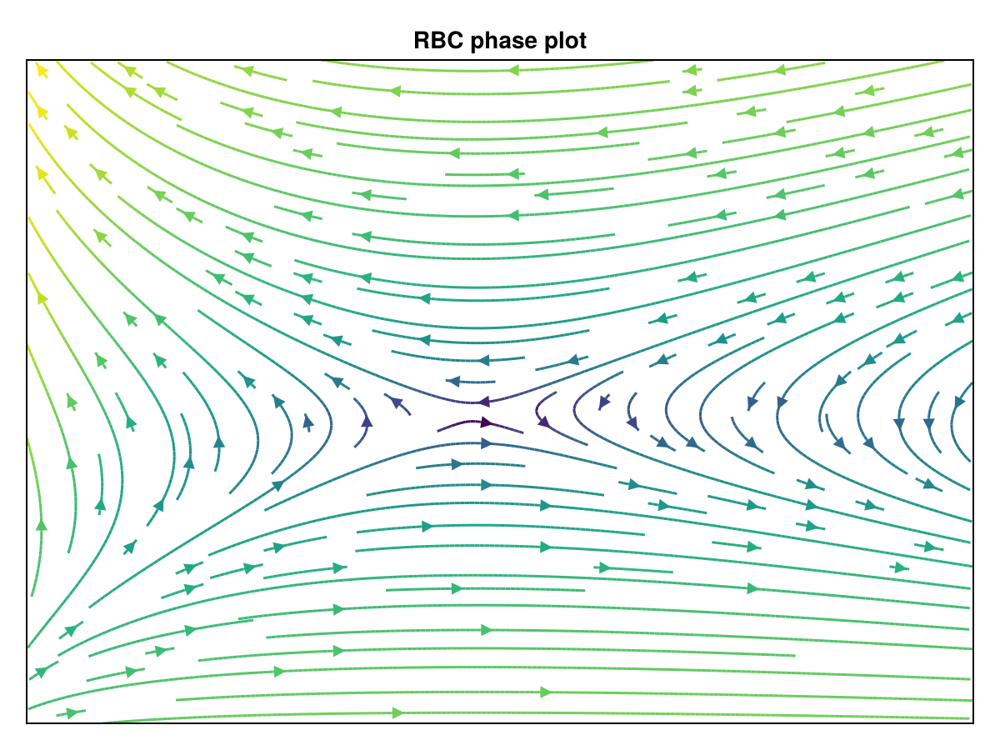

Solving the RBC Model
using DynamicMacroeconomics
using DifferentiationInterface
import ForwardDiffConsider a perfectly competitive economy where households directly supply their capital reserves $K_{t-1}$ and labor hours $L_{t}$ to firms, who produce goods $Y_{t}$ according to a production plan $Y_{t} = f(Z_{t}, K_{t-1}, L_{t})$ with exogenous productivity $Z_{t}$.
This is called the RBC Model where $f$ is chosen to reflect perfect competition, and households / firms instantaneously react to changes in prices for capital $r_{t}$ and labor $w_{t}$.
Firms
Firms pay households $(r_{t}, w_{t})$ for $(K_{t-1}, L_{t})$ to produce $Y_{t}$ and maximize profits (revenue minus costs):
\[\begin{aligned} \max_{K_{t},L_{t}} \ f(Z_{t}, K_{t-1}, L_{t}) - r_{t} K_{t-1} - w_{t} L_{t} \\ \implies r_{t} = \frac{\partial f}{\partial K_{t-1}} \quad w_{t} = \frac{\partial f}{\partial L_{t}} \end{aligned}\]
Consider, for example, a Cobb-Douglas production function $f(Z_{t}, K_{t-1}, L_{t}) = Z_{t} K_{t-1}^{\alpha} L_{t}^{1-\alpha}$ where the capital and labor demand functions are as follows:
\[r_{t} = \alpha Z_{t} K_{t-1}^{\alpha-1} L_{t}^{1-\alpha} \quad w_{t} = (1-\alpha) Z_{t} K_{t-1}^{\alpha} L_{t}^{-\alpha}\]
Note that in a perfectly competitive economy $Y_{t} = r_{t} K_{t-1} + w_{t} L_{t}$ which we can check by manipulating the above expressions.
Households
Households spend last periods earnings $r_{t} K_{t-1} + w_{t} L_{t}$ to either save $I_{t}$ or consume $C_{t}$ in order to maximize their expected lifetime utility:
\[\begin{aligned} \max_{C_{t}, I_{t}, L_{t}, K_{t}} \sum \beta^{t} u(C_{t}, L_{t}) \quad \text{s.t.} \quad & r_{t} K_{t-1} + w_{t} L_{t} = I_{t} + C_{t} \\ & K_{t} = I_{t} + (1 - \delta) K_{t-1} \end{aligned}\]
which can be combined to a single constraint
\[\max \sum \beta^{t} u(C_{t}, L_{t}) \quad \text{s.t.} \quad K_{t} = w_{t} L_{t} + (r_{t}+1-\delta) K_{t-1} - C_{t}\]
Solving this problem yields the following (forward looking) dynamics
\[\begin{aligned} \partial u / \partial C_{t+1} &= \partial u / \partial C_{t} \ \beta \left(r_{t} + 1 - \delta \right) \\ -\partial u / \partial L_{t} &= \partial u / \partial C_{t} \ w_{t} \end{aligned}\]
Note: utility functions are more abstract than production plans since they reflect a preference order on $(C_{t}, L_{t})$, where $u$ is isotone in $C_{t}$ and antitone in $L_{t}$ see here for more details.
Here, I use an isoelastic utility function
\[u(C_{t}, L_{t}) = \frac{C_{t}^{1 - \gamma}}{1 - \gamma} - \frac{L_{t}^{1 + \nu}}{1 + \nu}\]
which has additively separable preferences.
Optimality Conditions
To summarize, the model exhibits the following dynamics according to both households and firms:
\[\begin{aligned} \partial u / \partial C_{t+1} &= \partial u / \partial C_{t} \ \beta \left(r_{t} + 1 - \delta \right) \\ -\partial u / \partial L_{t} &= \partial u / \partial C_{t} \ w_{t} \\ K_{t} &= (w_{t} L_{t} + r_{t} K_{t-1} - C_{t}) + (1 - \delta) K_{t-1} \\ r_{t} &= \partial f / \partial K_{t-1} \\ w_{t} &= \partial f / \partial L_{t} \end{aligned}\]
There are a few simplifying assumptions we can make to more briefly describe the transition dynamics.
- Let $L_{t} = 1$ which implies that households are salaried (recall $L_{t}$ is hours worked)
- Firms are perfectly competitive, therefore $Y_{t} = r_{t} K_{t-1} + w_{t} L_{t} \implies Y_{t} = C_{t} + I_{t}$
With these simplifications, we can reduce the model to the following optimality conditions:
\[\begin{aligned} \partial u / \partial C_{t+1} &= \partial u / \partial C_{t} \ \beta \ \left(\partial f / \partial K_{t-1} + 1 - \delta \right) \\ K_{t} &= f(Z_{t}, K_{t-1}, 1) - C_{t} + (1 - \delta) K_{t-1} \\ \end{aligned}\]
which substitutes rental rate $r_{t}$ using capital demand and removes the constants associated with households choosing $L_{t}$ since (1) $u$ is motononic, (2) preferences are additively separable, and (3) optimal choice is purely ordinal.
A Note on Simplicity
This write up is intended to explain general equilibrium from having zero exposure to economics. Therefore, I intentionally take a long winded approach to explain the model's context and it's solution.
For example, I could have easily let markets clear $Y_{t} = C_{t} + I_{t}$ be present in the household's constraint, eliminating many of the reductions taken after optimization. But we cannot assume they do without welfare theorems, thus I show this fact ex-post.
Stochastic Shocks
Let's finally address the mostly neglected exogenous component $Z_{t}$, by constructing a mean reverting stochastic process with noise $\varepsilon_{t}$. Moreover, to ensure $Z_{t}$ remains positive, we can operate in the log space:
\[\log Z_{t} = \rho \log Z_{t-1} + \varepsilon_{t}\]
with $\varepsilon_{t} \sim N(0, 1)$.
Said shocks are essential in capturing business cycle dynamics exogenously, hence the name Real Business Cycle.
Defining the Model in DynamicMacroeconomics
With Cobb-Douglas production and an isoelastic utility, we can define the RBC model in full like so:
@block function productivity_process(z, ε)
z[t] = ρ * z[t-1] + σ * ε[t]
end;
@block function euler_equation(c, k, z)
(c[t] ^ -γ) = (c[t+1] ^ -γ) * β * (α * exp(z[t+1]) * k[t] ^ (α - 1) + (1 - δ))
end;
@block function budget_dynamics(c, k, z)
k[t] = (exp(z[t]) * k[t-1]^α - c[t]) + (1 - δ) * k[t-1]
end;Everything can also be defined in a single block ala Dynare; but for robust techniques, like sequence Jacobian methods, it could be advantageous to work things out sparsely in blocks.
Steady States
The first step to solving the model is obtaining the solution to the steady state, which represents an intertemporal fixed point.
Essentially, you take the optimality conditions $F(Z_{t},K_{t},C_{t})$ and let $X^{*} = X_{t} = X_{t+1}$ be the steady state value for $X = \{ Z, K, C \}$.
Note: for numerical computation, this can be done with some simple root finding algorithms in most settings; but for speed, I calculate this by hand which is reflected in the following code.
function analytical_steady_state(θ)
(; β, α, δ) = θ
kss = ((1 / β - 1 + δ) / α) ^ (1 / (α - 1))
css = kss ^ α - δ * kss
return (c=css, k=kss, z=0)
end;With the steady state calculation defined, we have enough to materialize the RBC model with exogenous shock $\varepsilon$.
θ = (
β = 1/1.05,
α = 0.30,
δ = 0.25,
γ = 1.00,
σ = 1.00,
ρ = 0.80
);
rbc_model = RationalExpectationsModel(
[productivity_process, budget_dynamics, euler_equation], analytical_steady_state, [:ε]
);Obtaining the State Space
Using the optimality conditions to directly define dynamics is a slippery slope. Ideally, one could just work with the PDE implied from the Hamiltonian.
However, this approach is only saddle-path stable. Therefore, slight deviations from steady-state will tend toward the boundaries when moving forward in time. The phase plot below summarizes this behavior for the continuous time version of the RBC model defined above.

This behavior is a direct property of the Pontryagin Maximum Principle, in which deviation from steady state violates the transversality condition. In macroeconomics this set of properties ensures solutions are interior, which is referred to as satisfying the Inada conditions.
To ensure that (1) solutions are stable and (2) states are purely backwards looking, we often use a k-th order approximation around the steady state to guarantee transition dynamics by assuming rational expectations.
Approximation
First let the lowercase denote the deviation from the steady state value and define the state vector $x_{t} = [z_{t}, k_{t}, c_{t}]$
Assume a first order perturbation for simplicity sake (this generalizes to a higher order)
\[0 = A x_{t+1} + B x_{t} + C x_{t-1} + D \varepsilon_{t}\]
where $A, B$ and $C$ are Jacobians with respect to the state variables, and $D$ is the Jacobian with respect to the shock $\varepsilon$.
Goal: We want to solve for $P,Q$ such that $x_{t} = P x_{t-1} + Q \varepsilon_{t}$
Rational expectations imply $E\left[\varepsilon_{t} \right] = 0$ therefore $x_{t+1} = P x_{t}$, which we can substitute to solve for the following:
\[0 = A P P + BP + C \quad \text{and} \quad 0 = (AP + B) Q + D\]
This yields matrices $P$ and $Q$ which defines the state transition for a first order system.
Using DynamicMacroeconomics, we can obtain these matrices and construct a SSMProblems compatible state space (as a vector autoregression) like so:
P, Q = solve(rbc_model, θ, 1; algo=QuadraticIteration(), backend=AutoForwardDiff())
VAR = LinearGaussianControllableDynamics(P, Q)LinearGaussianControllableDynamics([0.7 -0.0 0.4244897959188096; 0.35000000000000003 0.0 0.37551020408119035; -0.0 -0.0 0.8], [0.530612244898254; 0.46938775510174585; 1.0;;])